第16章：向你的应用程序添加资产¶
最初，在这一章中，你将学习如何管理资产目录中的资产，并创建最重要的应用程序图标。然而，你的应用程序最重要的部分是用照片、贴纸和文字来装饰你的卡片，所以你将专注于如何管理和导入随应用程序提供的贴纸图像。
在本章结束时，你将能够创建一个装满贴纸的卡片。

启动项目¶
➤ 打开本章的启动项目。
该启动项目与前一章挑战文件夹中的项目完全相同。
资产目录¶
本节中你将学习的技能。管理资产目录中的图像；应用图标；屏幕分辨率；矢量与位图
资产目录是迄今为止管理图像和颜色集的最佳场所。
在一个资产目录中，在一个图像集下，你可以为不同的主题、不同的设备、不同的比例甚至不同的色域定义多个图像。当你在代码中使用图像集的名称时，应用程序将自动为当前环境加载正确的图像。当你在资产目录中为不同的设备提供不同比例的图片时，应用商店会自动进行应用瘦身，只下载该特定设备的相关图片。
资产目录还保存着应用程序图标、启动屏幕图像和启动屏幕背景颜色。
添加应用程序图标¶
➤ 单击项目导航器顶部的项目名称Cards。选择目标卡片。在常规选项卡中，找到应用图标和启动图像，点击应用图标源下拉。
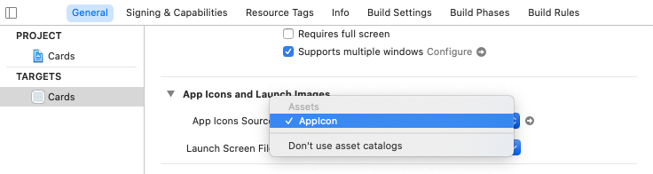
这是你可以指定为你的应用程序使用哪个图标的地方。您可以选择将图标保存在文件夹中，而不是资产目录中，但按照苹果的意图将它们保存在资产目录中要容易得多。
➤ 单击下拉菜单右侧的箭头。这将带您进入资产目录中的应用程序图标集。在您第一次创建项目时，iOS应用程序模板创建了这个空图标集。
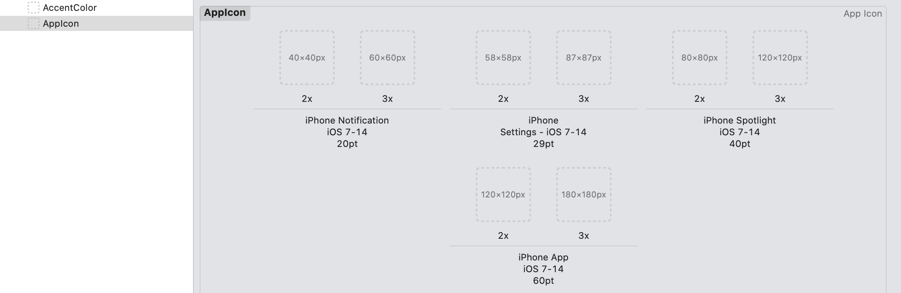
这些是所有苹果iOS设备的所有可能的图标尺寸和比例。
如果你足够幸运，像我们一样，为你的应用程序请了一位设计师，他们会分发一个设计文件，而不是代码。这可能是Sketch文件，或者像我们这样的情况，是Figma文件。
这个应用程序的设计师Lea Marolt（https://twittercom/hellosunschein）在Figma中为这个应用程序创建了所有的资产，Figma是一个"免费"的矢量图形原型设计工具。你可以在https://www.figma.com的网页界面中使用Figma，或者下载该链接中的配套应用程序。在本章的assets文件夹中，你会发现一个.fig文件，你可以将其导入Figma中。正如你所看到的，一些设计建议并不总是能进入已发货的产品。

这个设计包括应用程序的图标。这是一个单一的尺寸，但对于应用程序图标，你需要为不同的设备提供多种尺寸。幸运的是，Figma是一个矢量应用，你可以将图标设计导出为各种尺寸的PNG格式。你也可以在https://appicon.co上用一张图片创建图标。
设备分辨率和图像比例¶
早期的iPhone屏幕的像素密度为1:1，这意味着屏幕上100x100像素的图像占用100x100点。 iPhone 4引入了视网膜屏幕。视网膜只是苹果公司的一个营销术语，指的是具有较高像素密度的显示屏。在iPhone 4的屏幕上，你几乎看不到像素，一个100x100像素的图像在屏幕上占50x50点，比例系数为2。如果要让一张图片在屏幕上占据100x100点，你必须将其缩放到300x300像素。
苹果用@后缀解决了这个缩放困难。缩放为2的图像的后缀是@2x，而缩放为3的图像的后缀是@3x。
在Finder中，打开本章的assets文件夹，并打开App Icon子文件夹。这里存放着从Figma输出的PNG格式的图标。

每个文件名都包括点的大小和比例。例如，你可以看到第一个图标是20点，有三种不同的比例。
➤ 在应用图标上打开Xcode，在应用图标文件夹处打开Finder，将每个图标拖到其正确的位置。在iPad和iPhone使用相同的像素和点数大小的情况下，你可以使用相同的图标图像。
Note
尽管现在没有支持的非视网膜设备，但对于iPad，您仍应提供1x图标。iPadOS 有时会在运行缩放到iPad的iPhone应用程序时使用这些图标。

上面的图片将29pt的图标调换了一下，显示一个黄色的感叹号为错误。如果你看到错误，你应该纠正它们。这通常发生在你同时拖动多个资产时，Xcode不知道把它们放在哪里。考虑一个一个地或分小组拖动它们。
➤ 构建和运行，并从底部向上滑动以退出您的应用程序。你会看到你的新图标取代了旧的占位符图标的位置。

矢量与位图¶
你为图标导入了位图PNG图像。对于其他资产，你可以使用矢量格式，如PDF或SVG。如果可能的话，最好使用矢量格式。这些是由线条、曲线和填充物组成的。对于一个矢量线，你可以设置一个起点和一个终点。当你缩放线条时，矢量会调整大小而不损失任何分辨率。对于位图线，你必须拉伸或压缩像素。
这张图片显示了两张50像素宽的图片，按12的比例放大到600像素。一张是位图，另一张是矢量图。你可以看到，矢量图像没有失去任何清晰度。

添加一个矢量图像¶
稍后，你的应用程序将需要一个占位符图像来显示在加载图像时是否有错误。
➤ 在Finder中，打开本章的assets文件夹，将error-image.svg拖到AppIcon下的资产目录面板。
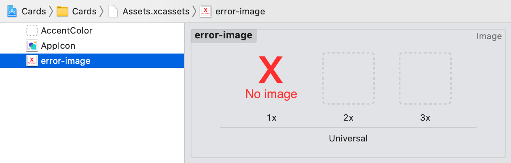
error-image.svg是一个矢量格式的图片，原始尺寸为512x512。你不需要将其缩放2倍和3倍，因为Xcode可以为你做这个。
➤ 打开属性检查器，将Scales改为Single Scale。

Xcode删除了中心面板中的2x和3x选项。当你为iPhone 12 Pro构建时，它是2x分辨率的，Xcode将自动添加到你的应用程序包中，一个512x512的优化位图图像被缩放到正确的2x分辨率。捆绑图像被保存在一个.car文件中，其格式是不公开的，所以你不能检查Xcode做了什么。
启动屏幕¶
在本节中你将学到的技能：启动屏幕；大小类
资产目录的另一个用途是保存启动屏幕图像和背景颜色，在你的应用程序启动时显示。你已经在第8章"保存设置"中见过了Info.plist。这个.plist文件就是你要设置启动画面和颜色的地方。
➤ 点击项目导航器顶部的卡片，选择卡片目标。选择信息标签，你会在自定义iOS目标属性部分看到Info.plist的内容。
您可以通过右键单击一个条目并选择添加行，或者通过选择一个对象并单击出现的+号来向其中添加新项目。你可以通过点击-号来删除项目。
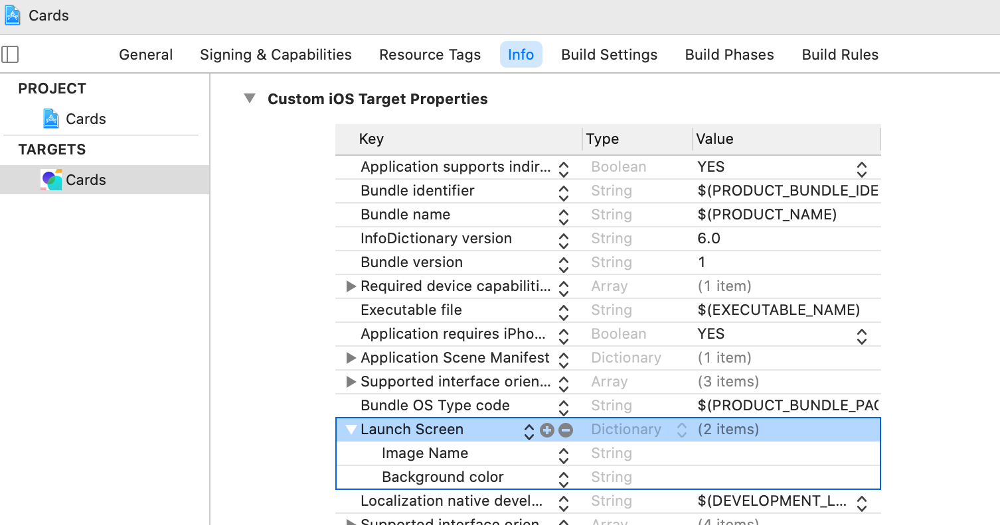
➤ 在启动屏幕下，为图像名称和背景颜色添加项目。您可能需要调整这些列的大小以显示值。
➤ 在图像名称的值字段中双击并输入：
LaunchImage
➤ 双击背景颜色的值域并输入：
LaunchColor
➤ 打开Assets.xcassets，点击资产面板底部的+号，选择图像集。将图像重命名为LaunchImage。
➤ 再次点击资产面板底部的+号，选择颜色集。将颜色重命名为LaunchColor。
当你现在运行你的应用程序时，该应用程序将使用这些来启动屏幕。不幸的是，模拟器不会清除启动屏幕的缓存，所以如果你改变了你的启动图像或颜色，在模拟器中，你将不得不进入Device > Erase All所有内容和设置...并完全清除模拟器。在设备上，删除应用程序应该是足够的，但你可能也要重新启动设备。
➤ 点击目录中的LaunchImage。你可以选择填充这三个图像。然而，就像错误的图像一样，你要使用一个单一比例的SVG图像。
➤ 在Finder中，打开assets/Launch Screen。将launch-screen-light.svg拖到1x的位置。
➤ 在属性检查器中，将比例改为单比例。

这个具有透明背景的SVG的原始尺寸为200x500px。Xcode将从中创建适当比例的位图图像，并将其显示在屏幕的中央。横向的iPhone需要一个高度较小的图像，所以你将使用尺寸类来决定加载哪个图像。
尺寸类¶
尺寸类用水平和垂直的特质表示可用的内容区域。这两个特征可以是常规的，也可以是紧凑的。所有的设备都有一个常规或紧凑的宽度尺寸类和一个常规或紧凑的高度尺寸类。你可以在苹果公司的人机界面指南中找到这些尺寸类别的清单，网址是https://apple.co/348lVx0，在尺寸类别部分。
这是一张iPhone和iPad相互叠加的插图：

对于纵向模式下的高度，所有设备都适合常规高度部分。对于横向模式下的高度，所有iPhone都符合紧凑高度部分。在横向模式下，大多数iPhone属于紧凑宽度部分。最大尺寸的iPhone和iPhone 11和12在横向中使用常规宽度。
iPad总是常规宽度和常规高度。然而，你仍然必须考虑到iPad上的尺寸等级，因为分屏。当处于纵向模式时，分屏应用都是紧凑的宽度。在横向模式下，用户可以在紧凑宽度和常规宽度之间调整尺寸。
对于你的应用程序，当前的启动图像将适合所有设备，除了iPhone在横向模式下。因此，你将为紧凑高度指定一个侧向图像。
➤ 在属性检查器中，将高度类改为任意和紧凑。

➤ 在Finder中，从assets/Launch Screen中，拖入launch-screen-landscape-light.svg。
➤ 构建并运行，你的启动屏幕应该在你的应用程序之前短暂地显示出来。尝试旋转模拟器以获得不同的景观启动屏幕。如果你的启动画面没有显示出来，记得擦除模拟器的内容。

现在你已经掌握了在属性检查器中为检查条件添加新图像的技巧，你就可以在本章末尾完成黑暗模式的挑战。
Note
在写这篇文章的时候，似乎有一个缩放的错误。SVG图像有时会被拉伸到全屏。如果这个bug持续存在，你将不得不自己调整图片的大小以适应iPad的屏幕，而不是依靠资产目录来管理缩放。
在你的应用程序中添加贴纸图片¶
本节中你将学习的技能。呈现多个模态；散列
有一件事是资产目录不允许你做的，那就是列举其中的所有图片。
当你发布你的卡片应用时，让它从人群中脱颖而出的一个方法是拥有一些优秀的贴纸。
你仍然可以将贴纸添加到资产目录中，但你必须跟踪有多少贴纸，并确保你有一个严格的命名规则。资产目录中的所有项目都需要有在应用包中独一无二的名字。
随着你的应用程序变得越来越流行，你可能会添加更多的贴纸，也许，将它们归类为主题。如果按名字列出每个资产，那就太麻烦了。你可能有多个艺术家在制作贴纸，而你不希望他们有机会接触到你的项目。
解决这个问题的方法是使用参考文件夹。与其使用资产目录，不如将贴纸文件夹放在项目之外，从项目中作为参考文件夹访问它。
➤ 在Finder中，看一下assets/Stickers/Camping文件夹。不久，你将把所有这些PNG文件添加到你的应用程序中。
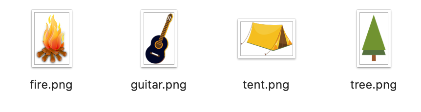
Note
这些贴纸来自Pixabay：https://bit.ly/3vojAJf。有几个网站，如https://unsplash.com和https://www.pexels.com，创作者在那里分享他们的作品并允许重复使用图片。在向你的应用程序添加图片之前，一定要检查许可证是否允许商业使用，并遵循许可证说明。贴纸使用Pixabay的许可证：免费用于商业用途，不需要注明出处。
添加贴纸的模式视图¶
在本节的前面，你设置了四个按钮来呈现四个不同的模态。现在你将创建一个模态视图，当你点击Stickers按钮时，它将出现，并显示参考文件夹中的所有贴纸。然后，用户将挑选一个，它将作为图像元素出现在卡片上。
在第1节中，你使用了.sheet(isPresented:onDismiss:content:)，其中你传递了一个布尔状态属性。当你有多个工作表要有条件地显示时，你可以通过传递一个可选的Item来选择不同的展示方法。在你的例子中，通用的Item将是一个CardModal。
➤ 打开CardDetailView.swift。
➤ 在body中，在工具条修改器的下面，添加这个：
.sheet(item: $currentModal) { item in
switch item {
case .stickerPicker:
EmptyView()
default:
EmptyView()
}
}
你会得到一个编译错误，因为sheet(item:)要求其参数是符合Identifiable的类型。这似乎是合理的，因为在引擎盖下，系统应该跟踪你当前使用的模态。
➤ 打开CardModal.swift，使CardModal符合Identifiable，就像你为Card结构所做的那样：
enum CardModal: Identifiable {
var id = UUID()
case photoPicker, framePicker, stickerPicker, textPicker
}
你会立即得到一个编译器错误，说"枚举不能包含存储的属性"。记住，你不能通过实例化来复制一个枚举，所以你不能在枚举中添加存储的var。然而，你需要包括var id，以便符合Identifiable。
让一个对象成为可哈希的¶
你需要一个能唯一识别一个对象的值。这描述了一个哈希值。散列算法从任何数据中计算出数值，以提供一个数字指纹。幸运的是，枚举自动符合Hashable，它提供了一个哈希值。
➤ 将var id = UUID()替换为：
var id: Int {
hashValue
}
你的应用程序现在将被编译。
这个var不是一个存储的属性，而是一个计算的属性。现在，当你创建一个CardModal对象时，每个对象都会有一个从枚举的哈希值中计算出来的不同id。
➤ 打开SingleCardView.swift，在实时预览中试用你的Stickers按钮。向下滑动以解散模态。

你现在有了一个显示你的贴纸的视图，所以现在是时候把它们添加到你的应用程序中了。
参考资料夹¶
本节中你将学习的技能：组；参考文件夹；从文件中加载图片；懒惰加载
当你在项目导航器中查看时，目前你的所有组，除了资产目录，都有黄色的文件夹图标。
➤ 单击视图组并打开文件检查器。

位置描述了如何存储该组。Relative to Group是指Xcode在组和文件夹的层次结构中寻找一个绝对路径。在你的应用程序中，这是你的项目导航器中最顶端的卡项。
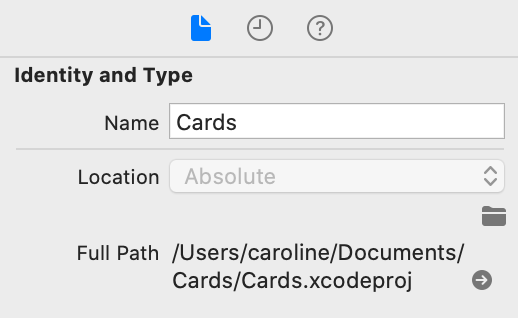
当你创建一个新的组时，你可以选择将该组与磁盘上的一个文件夹进行镜像。如果你在一个连接到磁盘文件夹的组内选择了一个文件, 并且你用File ▸ New ▸ Group创建了一个新的组, 那么Xcode将同时创建一个新的组和一个新的文件夹.
如果你当前的选择是在一个没有磁盘镜像文件夹的逻辑组内，那么Xcode将不会为一个新的组创建一个新的文件夹。File ▸ New ▸ Group下的选项将做相反的事情。它在有文件夹的组或无文件夹的组之间变化，取决于你当前选择的文件是否在一个镜像组内。
如果你当前的文件在一个逻辑组中，黄色的图标在左下方有一个小三角形。

另一方面，Xcode完全没有组织参考文件夹。当你把一个参考文件夹带入项目时，它将有一个蓝色的图标，其层次结构将反映磁盘层次结构。
➤ 在Finder中，找到assets/Stickers。
你将把这个文件夹作为贴纸资产的主文件夹。美术师创建的任何贴纸都应该放到这个文件夹中。
➤ 将Stickers文件夹拖到Xcode项目导航器中。
一般来说，当你导入文件时，如果需要的话，你会勾选复制项目，并且你会选择创建组而不是创建文件夹引用。只是在这个时候，你会取消勾选如果需要的话复制项目，并选择创建文件夹引用。
➤ 在导入界面上填写以下内容：
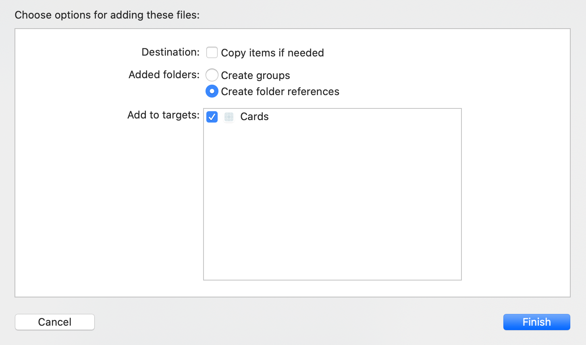
Warning
每当你把一个文件或文件夹拖入Xcode时，确保你检查这些设置。如果需要的话，你通常会勾选复制项目，一般来说，你想创建组，而不是文件夹引用。
你现在在你的项目中有一个名为Stickers的蓝色文件夹，有一个蓝色的子文件夹Camping。这个蓝色的文件夹标志着它是一个参考文件夹。Xcode将只允许你在这个文件夹内创建文件夹，而不是组。

➤ 在Finder中，在Stickers中创建一个名为Nature的新文件夹，并将Camping/tree.png复制到此文件夹。Xcode将立即更新其层次结构以反映磁盘上发生的情况。
如果你在黄色组中尝试这样做（不要！），Xcode将无法找到你在Finder中移动的任何文件。

在这个文件夹层次结构中，你有两张名字相同的图片tree.png。在应用程序捆绑包或资产目录中，你不能有相同名称的图像，但这在这里是可行的，因为应用程序包含参考文件夹层次结构。
使用参考文件夹的一个好处是，以Stickers为顶层文件夹，您的艺术家可以在不同的文件夹中创建新的主题，而不必触及Xcode项目。
➤ 删除Nature文件夹，因为你不需要它。
Note
有时您的项目可能会丢失对图像的Stickers文件夹的引用。在这种情况下，Stickers将以红色出现在项目导航器中。选择红色的文件夹名称，并在属性检查器中，点击位置下的文件夹图标。导航到你的Stickers文件夹并点击选择。或者，你可以删除这个红色项目，然后重新导入Stickers文件夹作为参考文件夹。如果你想确认文件夹的位置，可以右击文件夹，选择在Finder中显示。
从参考文件夹中加载文件¶
现在，你将创建一个贴纸视图，从贴纸文件夹中加载图像。
➤ 在单卡视图中，创建一个名为卡模态视图的新子组，并在该组中创建一个名为StickerPicker.swift的新SwiftUI视图文件。
➤ 打开CardDetailView.swift并找到 .sheet(item: $currentModal)。
➤ 在case .stickerPicker:中，将EmptyView()替换为。
StickerPicker()
➤ 打开SingleCardView.swift，对其进行预览，并固定预览，这样就可以从其他视图中访问它。
➤ 通过点击实时预览中的贴纸，试用新的贴纸模式。

从文件夹中加载SwiftUI Image并不像从资产目录中加载那样简单。资产目录做了很多繁重的工作。例如，如果您将一个矢量文件添加到资产目录中，Xcode将自动转换为本地像素格式，而从文件夹中加载一个矢量文件则不是一件容易的事。
当你从文件夹中加载一个图片时，你会把它加载到UIKit的UIImage的一个实例中。你还需要提供完整的应用程序捆绑资源路径。
➤ 打开StickerPicker.swift并将body替换为：
var body: some View {
// 1
Group {
// 2
if let resourcePath = Bundle.main.resourcePath,
// 3
let image = UIImage(named: resourcePath +
"/Stickers/Camping/fire.png") {
Image(uiImage: image)
} else {
EmptyView()
}
}
}
翻阅代码：
- 因为你要返回一个
Image或EmptyView，所以将条件包在一个Group中。 - 获取应用程序包的完整资源路径。
- 使用贴纸的完整名称和路径加载
UIImage，并使用uiImage参数创建Image视图。
➤ 恢复实时预览，点击贴纸，就可以看到贴纸的图像。
然而，你并不只想要一个贴纸，你想看到所有的贴纸。根据你的贴纸数量，你不应该一次加载所有的UIImage，因为加载图片的资源很重，而且会阻塞用户界面。你可以在前面加载文件名，随着用户的滚动，在需要的时候加载图片。这就是所谓的懒惰加载。
➤ 在StickerPicker中创建一个新的属性来保存文件名：
@State private var stickerNames: [String] = []
➤ 创建一个新的方法来加载贴纸名称：
func loadStickers() -> [String] {
var themes: [URL] = []
var stickerNames: [String] = []
}
你将首先在Stickers文件夹中加载顶层的文件夹名称。这些将是主题。你将能够在未来为你的应用程序添加新的主题，只需在Finder的Stickers文件夹内添加一个新的文件夹。你不需要改变任何代码就可以做到这一点。
➤ 在先前的代码之后添加此代码：
// 1
let fileManager = FileManager.default
if let resourcePath = Bundle.main.resourcePath,
// 2
let enumerator = fileManager.enumerator(
at: URL(fileURLWithPath: resourcePath + "/Stickers"),
includingPropertiesForKeys: nil,
options: [
.skipsSubdirectoryDescendants,
.skipsHiddenFiles
]) {
// 3
for case let url as URL in enumerator
where url.hasDirectoryPath {
themes.append(url)
}
}
翻阅代码：
- 加载默认的文件管理器和捆绑资源路径。
- 获取
Stickers文件夹的目录枚举器，如果它存在的话。对于options参数，你跳过子目录的后代和隐藏文件。除非你跳过子目录，否则一个枚举器会继续往下走，这就是层次结构。你目前只想收集顶部的文件夹名称作为主题。 - 如果
URL是一个目录，把它添加到themes中。
for case let代码的一个替代方案是：
while let url = enumerator.nextObject() as? URL {
if url.hasDirectoryPath {
themes.append(url)
}
}
这将以完全相同的方式进行循环，但给出的代码更加简洁。
现在，你将遍历所有的主题目录并检索里面的文件名。
➤ 在前面的代码之后添加这段代码：
for theme in themes {
if let files = try?
fileManager.contentsOfDirectory(atPath: theme.path) {
for file in files {
stickerNames.append(theme.path + "/" + file)
}
}
}
return stickerNames
对于每个主题文件夹，你检索该目录下的所有文件，并将完整的路径附加到stickerNames。然后从该方法返回这个数组。
➤ 创建一个新的方法，从一个路径加载一个UIImage：
func image(from path: String) -> UIImage {
print("loading:", path)
return UIImage(named: path)
?? UIImage(named: "error-image")
?? UIImage()
}
你暂时打印出路径名，这样你就可以检查你是否在懒散地加载图片。然后你返回从路径名加载的UIImage。如果你不能加载图像，返回你先前创建的资产目录中的错误图像。因为这仍然是可选的，你需要返回一个非可选的，如果一切都失败了，创建一个空白的UIImage。
➤ 将body改为：
var body: some View {
ScrollView {
ForEach(stickerNames, id: \.self) { sticker in
Image(uiImage: image(from: sticker))
.resizable()
.aspectRatio(contentMode: .fit)
}
}
.onAppear {
stickerNames = loadStickers()
}
}
你不是只显示一个贴纸，而是遍历所有的贴纸名称，并从UIImage中创建一个Image。使用onAppear(perform:)，你可以在StickerPicker第一次加载时加载贴纸。
➤ 要看打印输出，建立并运行。选择第一张卡，然后点击Stickers。观察调试控制台的输出，你会看到所有的图像都在前面加载，最后是树和吉他。如前所述，如果有大量的贴纸，这将阻塞用户界面。
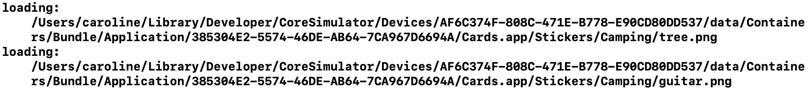
➤ 为了让贴纸懒散地加载，在body中，命令点击ForEach并将其嵌入VStack中。
➤ 将VStack {改为：
LazyVStack {
➤ 建立并运行，并再次显示贴纸模式屏幕。现在，只有显示在屏幕上的图像，加上刚刚的一个，才会加载。向下滚动，你会在调试控制台中看到，当你接近吉他图像时，它就会加载。你的图像现在正在懒散地加载。
这些图片太大了，在网格中看起来会好很多。幸运的是，除了懒惰的VStack和HStack之外，SwiftUI还提供了一个懒惰的加载网格视图。
使用懒惰的网格视图¶
你将在本节中学习的技能：网格
LazyVGrid和LazyHGrid提供垂直和水平网格。通过LazyVGrid，你可以定义如何布局列，通过LazyHGrid，你可以布局行。
➤ 为StickerPicker添加一个新的属性：
let columns = [
GridItem(spacing: 0),
GridItem(spacing: 0),
GridItem(spacing: 0)
]
➤ 将LazyVStack {改为：
LazyVGrid(columns: columns) {
你仍然在使用相同的ForEach和Image视图，但它们现在适合于网格中的可用空间，而不是占据整个屏幕的宽度。网格使用所有的水平可用空间，并将其平均分配给指定的GridItem。
➤ 为了直观地看到这一点，在设计画布中，停止实时预览（如果有的话），然后向下滚动到贴纸选取器预览。在代码中，将光标放在Image修改器之后。Image的轮廓将显示在预览中。
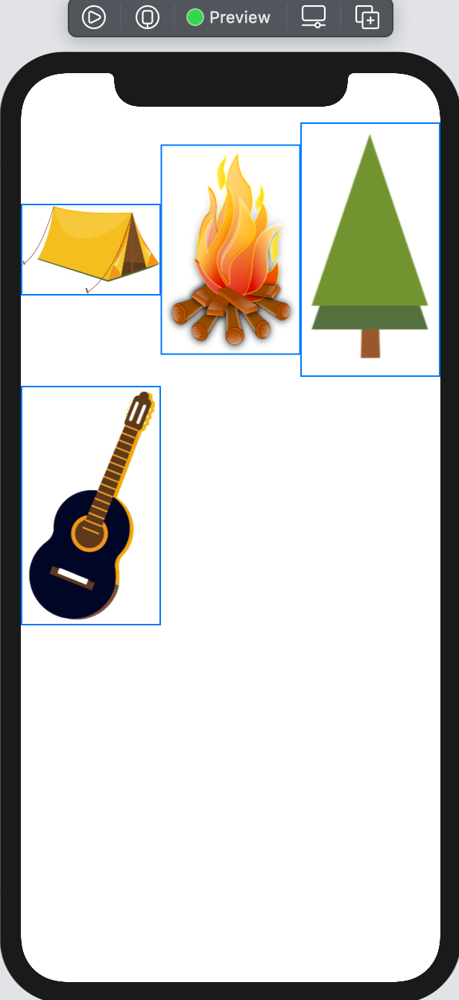
Swift
如果这是一个LazyHGrid，你将以定义rows的方式定义columns，网格将划分出可用的垂直空间。要水平滚动，请添加一个水平轴： ScrollView(.horizontal)。
➤ 在StickerPicker()之后给StickerPicker_Previews添加一个横向预览：
StickerPicker()
.previewLayout(PreviewLayout.fixed(width: 896, height: 414))

虽然网格在纵向模式下看起来不错，但在横向模式下，水平方向上有更多的图片看起来会更好。
➤ 将columns属性声明改为：
let columns = [
GridItem(.adaptive(minimum: 120), spacing: 10)
]
列的大小将为120点，以10点为间隔。
➤ 同时预览纵向和横向。

Swift
除了adaptive，GridItem.size也可以是fixed的固定尺寸，或者是flexible的灵活尺寸，即根据可用空间来确定尺寸。
选择贴纸¶
现在你有了贴纸的显示，你要点击一个来选择它，解除模态，并把贴纸作为一个卡片元素添加到卡片中。
➤ 在StickerPicker中，添加一个属性来保存所选图片：
@Binding var stickerImage: UIImage?
模态的父级将传入一个状态属性，以保持选定的图像。
➤ 添加持有演示状态的环境属性：
@Environment(\.presentationMode) var presentationMode
你将使用这个属性来解散模态。
➤ 给Image添加一个修改器：
.onTapGesture {
stickerImage = image(from: sticker)
presentationMode.wrappedValue.dismiss()
}
当用户点击一个图像时，就会更新绑定的贴纸图像，并解除模态。
➤ 更新预览：
struct StickerPicker_Previews: PreviewProvider {
static var previews: some View {
StickerPicker(stickerImage: .constant(UIImage()))
}
}
你现在可以选择一个贴纸，并同时取消模态。然后，CardDetailView将接管并存储和显示所选的贴纸。
➤ 打开CardDetailView.swift，添加一个新的状态属性：
@State private var stickerImage: UIImage?
这将保存当前从StickerPicker中选择的贴纸。
➤ 找到sheet(item:)与stickerPicker案例。这将有一个编译错误，因为你还没有把状态属性传递给 StickerPicker。
➤ 将StickerPicker()改为：
StickerPicker(stickerImage: $stickerImage)
现在你已经绑定了状态属性，你的应用程序应该再次编译。
➤ 在前面的代码之后，添加这个：
.onDisappear {
if let stickerImage = stickerImage {
card.addElement(uiImage: stickerImage)
}
stickerImage = nil
}
撤销模态时，你应该将贴纸存储为卡片元素，并将贴纸图像重置为nil。在你写完addElement(uiImage:)之前，你会得到一个编译错误。
➤ 打开模型组中的Card.swift，添加这个新方法：
mutating func addElement(uiImage: UIImage) {
let image = Image(uiImage: uiImage)
let element = ImageElement(image: image)
elements.append(element)
}
这里你接收了一个新的UIImage，并在卡片上添加了一个新的ImageElement。在下一章中，你也能用这个方法来添加照片。
➤ 构建并运行，选择橙色的第二张卡片，并向其添加一些贴纸。按你的要求调整贴纸的大小和位置，创造一个杰作 :]。
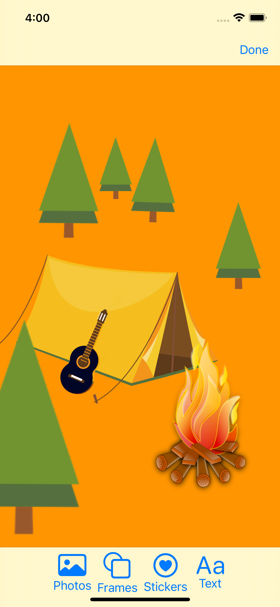
挑战¶
挑战1：设置一个黑暗模式的启动屏幕¶
你的应用程序目前在纵向和横向有不同的启动画面，当高度大小类为紧凑时。你的挑战是在设备使用黑暗模式时增加不同的启动画面。你要在资产目录中改变启动图像的外观属性。你会在assets文件夹中找到黑暗的启动屏幕图像。就像你在本章前面所做的那样，把这些拖到适当的位置。
当你在模拟器上测试时，为了让新的启动屏幕显示出来，你需要删除所有的设备内容和设置。
挑战2：设置发射颜色¶
本章没有具体介绍颜色，但你可以用与图像相同的方法改变外观和设备。你已经在Info.plist中设置了一个启动色，作为启动背景色使用。在资产目录中改变启动颜色。点击显示颜色面板显示颜色面板，使用白色--FFFFFF--作为设备的浅色外观，使用十六进制颜色292A2E作为深色外观。
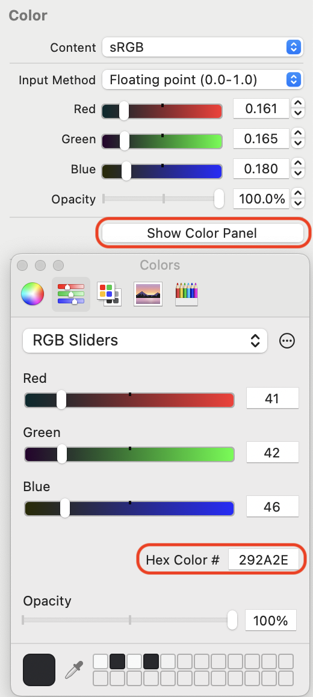
如果你被卡住了，挑战项目中的资产目录会告诉你该怎么做。
关键点¶
- 资产目录是你在大多数时候应该管理图片和颜色的地方。
- 如果资产目录不适合用途，那么就使用参考文件夹。
- 在资产目录中，倾向于使用矢量图像而不是位图。它们的文件大小较小，并且在缩放时保持清晰度。
Xcode会自动缩放到适合当前设备的尺寸。 - 想一想如何使您的应用程序与众不同。好的应用程序设计加上艺术作品可以真正使您从人群中脱颖而出。
从这里开始，要去哪里？¶
在本章中，你使用了应用程序图标和启动屏幕。苹果人机界面指南，通常被称为HIG，将为你指出最佳使用方法。你可以在这里找到iOS的HIG。https://developer.apple.com/design/human-interface-guidelines/ios/visual-design/launch-screen/。
例如，他们建议不要在启动屏幕上使用品牌，而是让你的启动屏幕与你的应用中的第一个屏幕相似，这样就会显得应用的加载速度很快。
你应该研究一下HIG，这样你就知道苹果在应用程序中寻找的是什么。使用苹果设备的人喜欢简洁明快的界面，而准则将帮助你遵循这一追求。如果你勤奋地遵循这些准则，你甚至可能被苹果公司在应用商店中推出。